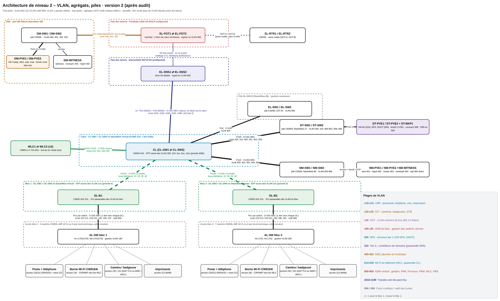
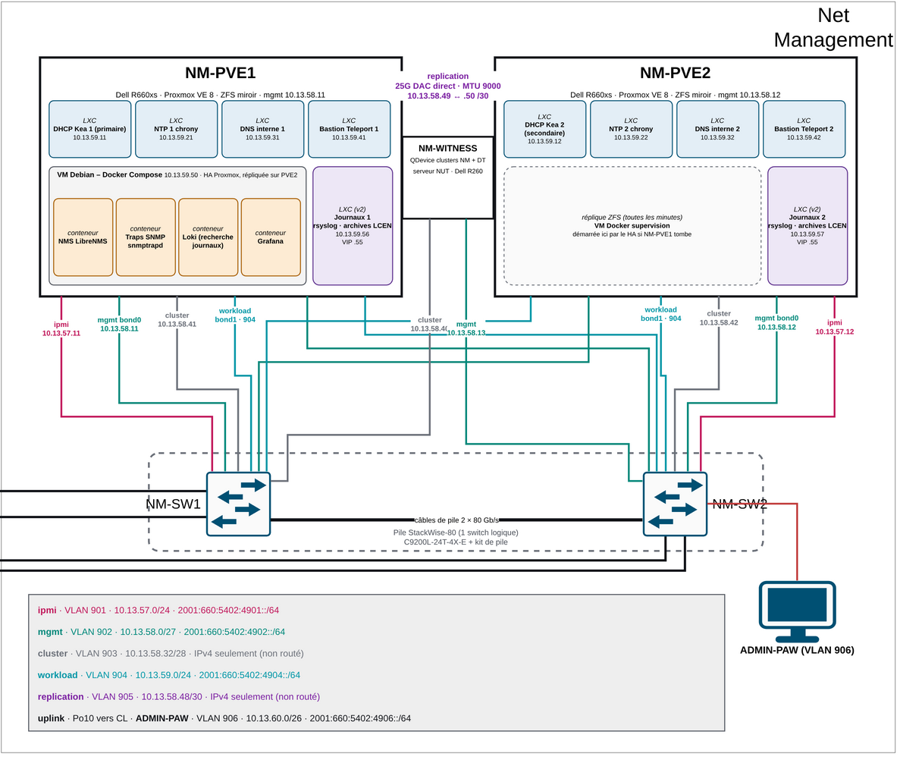

Site de Marseille · IUT Génie Télécom, Luminy · RudyLink Infrastructure · version 2 · 15/11/2026
Points 03 et 06 · VLAN, trunks, agrégats, piles, Spanning Tree, profils de ports, sécurité L2, zone Net Management
livrables/archives/v1_2026-11-15/. Le traitement de chaque constat est détaillé dans livrables/audit/traitement_audit.pdf. Changements dans ce document (repérés v2) :Les blocs sont logiques, pas physiques. Les quatre DL-SW sont dans la baie 1 de la salle serveur (sous-sol), à côté du cœur (bilan de puissance du point 14). Chaque local technique y remonte par deux fibres, l'une par la colonne Nord, l'autre par la colonne Sud (plan de câblage). Un bloc est donc un groupe de locaux qui partagent une paire de DL et les mêmes VLAN : on peut rattacher un local à l'autre bloc en changeant deux jarretières, sans recâbler.
| Bloc | Locaux techniques | Switchs d'accès | Prises | Ports 10G utilisés | Marge |
|---|---|---|---|---|---|
| Bloc 1 (DL-SW1/2) | N-1-LT01, N-1-LT02, N0-LT01, N0-LT02 | 8 | 216 | 20 / 30 | 10 ports, soit 5 switchs d'accès de plus |
| Bloc 2 (DL-SW3/4) | N1-LT01, N1-LT02 | 7 | 268 | 18 / 30 | 12 ports, soit 6 switchs d'accès de plus |
Ports disponibles par paire : 2 × (16 ports 10G − 1 port DAD) = 30. Chaque switch d'accès prend 2 ports (un par DL) ; 4 ports vont au cœur. Les liens SVL utilisent le module 2×40G.
Capacité : deux blocs suffisent largement. Un switch d'accès a 48 ports 1G pour 2 × 10G de montée, soit un rapport de 2,4 pour 1 (on recommande de rester sous 20 pour 1 à l'accès). Chaque bloc garde au moins un tiers de ses ports 10G libres.
Un seul bloc ne tiendrait pas sur des C9500-16X : les 15 switchs d'accès demanderaient 34 ports pour 30 disponibles. Un cœur replié (accès raccordé directement au cœur) non plus : il faudrait 30 ports pour l'accès, plus 12 vers EL-SW, DT-SW et NM-SW, soit 42 ports pour 30. Ces deux options imposent un cœur plus dense (C9500-48Y4C, 48 ports 1/10/25G, à chiffrer). Elles économiseraient alors une partie des 38 000 € HT des quatre DL-SW et environ 640 W. Cette variante est chiffrée dans le dossier (pistes d'optimisation du chiffrage, constat NET-02 de l'audit). Nous gardons pourtant les trois couches, pour trois raisons :
Pourquoi par étage et pas par aile. Aucun VLAN filaire n'est partagé entre deux blocs. Le découpage par étage équilibre les blocs (8 et 7 switchs, contre environ 5 et 10 en regroupant les locaux 01 et 02) et se lit directement dans les numéros : VLAN 1xx = sous-sol et RDC, VLAN 2xx = 1er étage.
Wi-Fi v2 : en v1, les bornes commutaient le trafic localement (FlexConnect) dans le VLAN Wi-Fi de leur bloc. Un client qui prenait l'escalier changeait de sous-réseau et perdait ses connexions (visio, SSH) : c'est le constat critique NET-01 de l'audit. En v2, les bornes sont en mode local : le trafic des clients remonte en CAPWAP à deux contrôleurs physiques C9800-L (HA SSO) raccordés au cœur, qui le posent dans un VLAN unique par SSID pour tout le bâtiment (514, 515, 530). Le client garde son adresse partout ; l'itinérance 802.11r/OKC ne dure que quelques dizaines de millisecondes. La v1 avait écarté cette solution parce que le contrôleur était une VM du cluster NM raccordée en 1G : les contrôleurs physiques sont branchés en 2×10G sur le cœur.
Revers assumé : si les deux DL d'une paire tombent en même temps (panne double, très improbable, ou erreur de configuration sur le bloc), c'est un étage entier qui est coupé plutôt qu'une demi-aile.

| VLAN | Nom | VRF | AL bloc 1 | DL-B1 | AL bloc 2 | DL-B2 | CL | WLC | DT-SW | NM-SW | EL-SW | DM-SW |
|---|---|---|---|---|---|---|---|---|---|---|---|---|
| 110 | PERS-B1 | USR | ✓ | SVI | ||||||||
| 111 | ETU-B1 | USR | ✓ | SVI | ||||||||
| 112 | VOIX-B1 | USR | ✓ | SVI | ||||||||
| 113 | IMPR-B1 | USR | ✓ | SVI | ||||||||
| 120 | CAM-B1 | IOT | ✓ | SVI | ||||||||
| 121 | BADGE-B1 | IOT | ✓ | SVI | ||||||||
| 122 | GTB-B1 | IOT | ✓ | SVI | ||||||||
| 130 | RESTREINT-B1 | GST | ✓ | SVI | ||||||||
| 190 | GEST-ACC-B1 | ADM | ✓ | SVI | ||||||||
| 191 | AP-B1 | ADM | ✓ | SVI | ||||||||
| 210 | PERS-B2 | USR | ✓ | SVI | ||||||||
| 211 | ETU-B2 | USR | ✓ | SVI | ||||||||
| 212 | VOIX-B2 | USR | ✓ | SVI | ||||||||
| 213 | IMPR-B2 | USR | ✓ | SVI | ||||||||
| 220 | CAM-B2 | IOT | ✓ | SVI | ||||||||
| 221 | BADGE-B2 | IOT | ✓ | SVI | ||||||||
| 222 | GTB-B2 | IOT | ✓ | SVI | ||||||||
| 230 | RESTREINT-B2 | GST | ✓ | SVI | ||||||||
| 290 | GEST-ACC-B2 | ADM | ✓ | SVI | ||||||||
| 291 | AP-B2 | ADM | ✓ | SVI | ||||||||
| 300 | SRV-INFRA | SRV | SVI | ✓ | ||||||||
| 310 | SRV-T0 | T0 | ✓ | ✓ | ||||||||
| 400 | DMZ-FRONT | DMZ | ✓ | |||||||||
| 401 | DMZ-BACK | DMZ | ✓ | |||||||||
| 402 | DMZ-GEST | DMZ | ✓ | |||||||||
| 403 | DM-CLUSTER | DMZ | ✓ | |||||||||
| 514 | WIFI-PERS | USR | SVI | ✓ | ||||||||
| 515 | WIFI-ETU | USR | SVI | ✓ | ||||||||
| 530 | WIFI-INVITES | GST | SVI | ✓ | ||||||||
| 900 | GEST-RESEAU | ADM | SVI | ✓ | ✓ | ✓ | ||||||
| 901 | NM-IPMI | ADM | SVI | ✓ | ✓ | |||||||
| 902 | PVE-MGMT | ADM | SVI | ✓ | ✓ | |||||||
| 903 | NM-CLUSTER | ADM | ✓ | |||||||||
| 904 | NM-WORKLOAD | ADM | SVI | ✓ | ||||||||
| 905 | NM-REPL | ADM | ||||||||||
| 906 | ADMIN-PAW | ADM | SVI | ✓ | ||||||||
| 907 | WLC-MGMT | ADM | SVI | ✓ | ||||||||
| 908 | DT-CLUSTER | ADM | ✓ | |||||||||
| 909 | SAUVEGARDE | ADM | SVI | ✓ | ||||||||
| 1010 | TR-USR | USR | SVI | |||||||||
| 1020 | TR-IOT | IOT | SVI | |||||||||
| 1030 | TR-GST | GST | SVI | |||||||||
| 1040 | TR-SRV | SRV | SVI | |||||||||
| 1090 | TR-ADM | ADM | SVI |
SVI : interface routée (passerelle) du VLAN. Le VLAN 1100 (TR-FW) relie directement les deux pare-feu, sans switch. Le VLAN 905 (réplication) est un câble direct entre les deux hyperviseurs NM. Les VLAN 903 et 908 (corosync) ne quittent pas leur pile (NM-SW, DT-SW), le 403 reste sur DM-SW. Le VLAN 310 traverse CL sans SVI : sa passerelle est le Stormshield. Les VLAN 514, 515 et 530 n'existent que sur CL et sur les contrôleurs : ils ne descendent jamais vers les blocs.
| Agrégat | De | Vers | Liens | Mode | VLAN autorisés | Natif |
|---|---|---|---|---|---|---|
| Po1 (×15) | AL-SWn | DL-B1 ou DL-B2 | 2×10G SFP+ (1 vers chaque DL) | trunk | n10-n13, n20-n22, n30, n90, n91 v2 | 999 |
| Po101 | DL-B1 | CL | 4×10G (maillage complet) | routé, sous-interfaces 802.1Q | tags 10, 20, 30, 90 (VRF) | — |
| Po102 | DL-B2 | CL | 4×10G | routé, sous-interfaces 802.1Q | tags 10, 20, 30, 90 (VRF) | — |
| Po2 / Po3 v2 | EL-SNS1 / EL-SNS2 | CL (1 lien par membre) | 2×10G chacun (module 10G du SN710) | trunk | 1010, 1020, 1030, 1040, 1090, 310 | 999 |
| Po4 v2 | CL | pile EL-SW | 2×10G | trunk | 900 | 999 |
| — | EL-FGT1/2, EL-SNS1/2, EL-RTR1/2 (mgmt) | pile EL-SW | 1G | access | 900 | — |
| redundant | EL-FGT ↔ EL-SNS | direct (maillage 2×2) | 10G | routé | TR-FW (non tagué) | — |
| Po30 / Po31 v2 | WLC1 / WLC2 (C9800-L-F) | CL (1 lien par membre) | 2×10G chacun | trunk | 514, 515, 530, 907 | 999 |
| Po10 | CL | pile NM-SW | 4×10G | trunk | 900, 901, 902, 904, 906 | 999 |
| Po20 v2 | CL | pile DT-SW | 4×10G | trunk | 300, 310, 900, 901, 902, 909 | 999 |
| Po21 / Po22 v2 | pile DT-SW | DT-PVE1 / DT-PVE2 (bond1) | 2×25G LACP | trunk | 300, 310 (VM) | 999 |
| Po23 v2 | pile DT-SW | DT-BKP1 | 2×25G LACP | access | 909 | — |
| Po1 | EL-FGT (port DMZ) | pile DM-SW | 2×10G | trunk | 400, 401, 402 | 999 |
| Po11 / Po12 v2 | pile DM-SW | DM-PVE1 / DM-PVE2 (bond1) | 2×10G LACP | trunk | 400, 401 (VM) | 999 |
| Po31 / Po32 | pile NM-SW | NM-PVE1 / NM-PVE2 (bond1) | 2×1G LACP | trunk | 904 | 999 |
Ports 10G du cœur (2 × C9500-16X = 32 ports) : Po101 4, Po102 4, Po2 + Po3 4, Po4 2, Po10 4, Po20 4, Po30 + Po31 4, DAD 2 : 28 utilisés, 4 libres. Les liens SVL sont sur le module 2×40G.
LACP en mode active des deux côtés, hachage src-dst-ip-l4port. Les liens fibre ont UDLD agressif. Les liens d'un agrégat passent par des chemins de câbles différents (rocades Nord et Sud du plan de câblage).
| Paire | Technologie | Liens de la paire | Détection double actif |
|---|---|---|---|
| CL-SW1/2, DL-SW1/2, DL-SW3/4 | StackWise Virtual (C9500) | 2×40G SVL | lien DAD dédié 10G (fast-hello) |
| WLC1/2 v2 | C9800 HA SSO (actif/veille à chaud) | port de redondance RP direct (RJ45) | RMI + passerelle (10.13.60.71/.72) ; bornes et clients conservés |
| EL-SW, NM-SW, DM-SW | StackWise-80 (C9200L + kit de pile) | 2 câbles de pile 80 Gb/s en anneau | intégrée à la pile |
| DT-SW1/2 | StackWise-1T (C9300X) | 2 câbles de pile | intégrée à la pile |
| EL-FGT1/2 | FortiGate FGCP actif/passif | ha1 + ha2 directs | heartbeat sur 2 liens, priorité + override off |
| EL-SNS1/2 | Stormshield HA actif/passif | 2 liens HA directs | liens HA redondés |
portfast + BPDU guard (un switch branché sur une prise coupe le port). Descentes des DL vers l'accès : root guard. Agrégats : loop guard par défaut.portfast trunk + BPDU guard.| Profil | Mode | VLAN | Authentification | PoE / QoS | Sécurité |
|---|---|---|---|---|---|
| Usager (poste + téléphone) | access + voice | n10 ou n11 donné par RADIUS ; voice n12 | 802.1X puis MAB (multi-auth), échec → n30 restreint | PoE+ pour le téléphone ; trust DSCP du téléphone (EF / CS3) | BPDU guard, storm-control 1 %, DHCP snooping, DAI, IPSG |
| Borne Wi-Fi v2 | access (mode local : tout passe en CAPWAP) | n91 | 802.1X (supplicant de la borne, certificat) | PoE+ (classe 4, ≈ 25 W) | BPDU guard |
| Caméra IP v2 | access | n20 | 802.1X EAP-TLS (certificat machine) si supporté, sinon MAB | PoE (classe 3) | ACL téléchargée par RADIUS : seulement l'enregistreur (RTSP/HTTPS) ; port-security 1 MAC, violation → shutdown |
| Badgeuse v2 | access | n21 | MAB (EAP-TLS si le modèle le permet) | PoE | ACL téléchargée : seulement le serveur de contrôle d'accès ; port-security 1 MAC |
| Imprimante | access | n13 | MAB | — | port-security 2 MAC |
| Port libre | access | 998 | — | — | shutdown |
! Exemple : AL-SW1 (bloc 1), prise usager interface GigabitEthernet1/0/12 description PRISE N0-B014-02 switchport mode access switchport access vlan 111 switchport voice vlan 112 authentication host-mode multi-auth authentication order dot1x mab authentication event fail action authorize vlan 130 access-session port-control auto dot1x pae authenticator mab spanning-tree portfast spanning-tree bpduguard enable storm-control broadcast level 1.00 ip dhcp snooping limit rate 15 ! interface GigabitEthernet1/0/40 description CAMERA C07 (v2 : EAP-TLS, sinon MAB + ACL telechargee) switchport mode access switchport access vlan 120 authentication order dot1x mab authentication priority dot1x mab access-session port-control auto access-session host-mode single-host dot1x pae authenticator mab switchport port-security switchport port-security violation shutdown ip access-group ACL-PAR-DEFAUT-IOT in ! remplacee par la dACL RADIUS spanning-tree portfast spanning-tree bpduguard enable ! RADIUS (NPS) renvoie : Cisco-AVPair = "ip:inacl#10=permit tcp any host 10.13.48.60 eq 554" ! "ip:inacl#20=permit tcp any host 10.13.48.60 eq 443" "ip:inacl#99=deny ip any any log" ! interface Port-channel1 description UPLINK vers DL-B1 (MEC) switchport mode trunk switchport trunk native vlan 999 switchport trunk allowed vlan 110-113,120-122,130,190,191 ip dhcp snooping trust ip arp inspection trust ! ip dhcp snooping vlan 110-113,120-122,130,190,191 ip arp inspection vlan 110-113,120-122,130 vtp mode off spanning-tree mode rapid-pvst spanning-tree vlan 1-4094 priority 61440
| SSID | Sécurité | VLAN | VRF |
|---|---|---|---|
| AMU-Personnel | WPA3-Entreprise (802.1X, NPS) | 514 (tout le bâtiment) v2 | USR |
| AMU-Etudiants | WPA3-Entreprise | 515 v2 | USR |
| eduroam | WPA3/WPA2-Entreprise, proxy RADIUS vers la fédération | 515 v2 | USR |
| AMU-Invites | OWE + portail captif du WLC, isolation des clients | 530 v2 | GST |
v2 Les bornes CW9164I sont en mode local (commutation centrale) : le trafic des clients remonte en tunnel CAPWAP jusqu'aux contrôleurs, qui le posent dans le VLAN du SSID. Ces VLAN ont leur passerelle sur le cœur. Un client garde la même adresse dans tout le bâtiment : passer du RDC au 1er étage ne coupe plus ses connexions (constat NET-01). Itinérance rapide 802.11r et OKC sur toutes les bornes.
Deux hyperviseurs Proxmox et un témoin (QDevice) : le quorum tient avec deux voix sur trois, donc la perte d'un nœud ne bloque pas le cluster. Le stockage est local (ZFS miroir) et répliqué sur l'autre nœud par un câble direct 25G : pas de stockage partagé à acheter. Chaque service critique existe deux fois (un par nœud : DHCP, NTP, DNS, Teleport, collecteur de journaux v2) ; seule la VM de supervision redémarre sur l'autre nœud en cas de panne (HA Proxmox). v2 Sa réplication passe de 5 minutes à 1 minute (perte maximale d'une minute de métriques), et les journaux ne dépendent plus d'elle : ils sont reçus par les deux collecteurs LXC. Le contrôleur Wi-Fi n'est plus une VM.
v2 Le témoin NM-WITNESS sert aussi de QDevice au cluster DT (même VLAN 902), et de serveur NUT qui commande l'arrêt ordonné de la salle sur batterie (voir le document énergie).

| Réseau | Interfaces de chaque nœud | Switch | VLAN | Rôle |
|---|---|---|---|---|
| ipmi | iDRAC dédié 1G | PVE1 → NM-SW1, PVE2 → NM-SW2 | 901 access | Console à distance, alimentation, même si l'OS est planté |
| mgmt | bond0 actif/secours : eno1 (SW1) + ens2f0 (SW2) | les deux membres | 902 access | GUI 8006, SSH, API, corosync lien 1 (secours) |
| cluster | eno2 1G dédié | PVE1 → SW1, PVE2 → SW2, témoin → SW1 | 903 access | Corosync lien 0 : latence faible, pas de trafic parasite |
| workload | bond1 LACP : ens2f1 (SW1) + ens2f2 (SW2), pont vmbr1 VLAN-aware | les deux membres (MEC) | trunk 904 | Trafic des VM et conteneurs |
| replication | ens1f0 25G SFP28, câble DAC direct | aucun | 905 (non tagué) | Réplication ZFS, migration à chaud, MTU 9000 |
# /etc/network/interfaces (NM-PVE1)
auto bond0
iface bond0 inet manual
bond-slaves eno1 ens2f0
bond-mode active-backup
bond-primary eno1
auto vmbr0
iface vmbr0 inet static # mgmt, VLAN 902 (port access côté switch)
address 10.13.58.11/27
gateway 10.13.58.1
bridge-ports bond0
bridge-stp off
iface vmbr0 inet6 static
address 2001:660:5402:4902::11/64
gateway 2001:660:5402:4902::1
auto eno2
iface eno2 inet static # cluster, VLAN 903, corosync lien 0
address 10.13.58.41/28
auto ens1f0
iface ens1f0 inet static # réplication, câble direct vers NM-PVE2
address 10.13.58.49/30
mtu 9000
auto bond1
iface bond1 inet manual
bond-slaves ens2f1 ens2f2
bond-mode 802.3ad
bond-xmit-hash-policy layer3+4
auto vmbr1
iface vmbr1 inet manual # workload : les VM sont taguées 904
bridge-ports bond1
bridge-vlan-aware yes
bridge-vids 904
# corosync : ring0 = 10.13.58.41/.42 (cluster), ring1 = 10.13.58.11/.12 (mgmt)
# pvecm qdevice setup 10.13.58.40 (NM-WITNESS)
# datacenter.cfg : migration: secure,network=10.13.58.48/30
v2 Le chiffrage v2 suit cette architecture (constat SYS-01) : 2 nœuds R660xs sans Ceph au lieu de 3, une carte 4×1G par nœud, le témoin NM-WITNESS, les kits de pile C9200L (EL-SW, NM-SW, DM-SW) et deux souscriptions Proxmox de moins pour ce cluster.
En v1, chaque service du datacenter et de la DMZ avait son serveur physique 1U (12 serveurs pour DNS, DHCP, RADIUS, AD, web, messagerie). L'audit (SYS-02) jugeait ce choix coûteux en achat, en place et en électricité. En v2, ces services sont des VM sur deux clusters Proxmox séparés, construits comme la zone NM (2 nœuds, ZFS répliqué en câble direct, HA) :
| Cluster DT (datacenter) | Cluster DMZ | |
|---|---|---|
| Nœuds | DT-PVE1, DT-PVE2 : Dell R660xs, 1 × 16 cœurs, 128 Go, 4 × 1,92 To SSD (ZFS miroir) | DM-PVE1, DM-PVE2 : Dell R360, 8 cœurs, 64 Go, 4 × 960 Go SSD (ZFS miroir) |
| VM | DT-AD1 / DT-AD2 (VLAN 310, tier 0), DT-RAD1/2 (NPS) et DT-DHCP1/2 (VLAN 300) : une de chaque par nœud | DM-RP1 / DM-RP2 (Caddy, un par nœud), DM-DNS1 / DM-DNS2 (le DNS public devient redondant), DM-WEB1, DM-MAIL1, DM-SRV1 |
| Quorum | QDevice sur NM-WITNESS (VLAN 902), qui sert les deux clusters internes | DM-WITNESS, témoin propre à la DMZ (VLAN 403) : aucun flux de la DMZ vers l'administration |
| Réseaux de chaque nœud | mgmt bond0 actif/secours → VLAN 902 ; corosync → VLAN 908 ; bond1 LACP 2×25G → trunk 300, 310 ; réplication 25G DAC 10.13.58.52/30 ; iDRAC → 901 | mgmt → VLAN 402 ; corosync → VLAN 403 ; bond1 LACP 2×10G → trunk 400, 401 ; réplication 10G DAC 172.16.13.112/30 ; iDRAC → 402 |
| Sauvegarde | vzdump par le réseau de gestion vers DT-BKP1 (VLAN 909) : même VRF ADM, aucun passage par le Stormshield | vzdump vers DT-BKP1 : seul flux DMZ → interne autorisé (tcp/8007, depuis DM-PVE1/2 uniquement) |
| Administration | Tier 0 : rôle Teleport dédié, MFA matériel, PAW tier 0 ; ni DT-PVE ni DT-BKP1 ne sont dans le domaine | Via Teleport puis le FortiGate (VPN d'administration), comme les iDRAC de la DMZ en v1 |
Pourquoi deux clusters et pas un seul. Une VM de la DMZ et un contrôleur de domaine ne doivent jamais partager un hyperviseur : une faille d'évasion de VM en DMZ donnerait la main sur l'AD. Les hyperviseurs qui portent les contrôleurs de domaine sont eux-mêmes tier 0 (guide ANSSI PA-099). Les DMZ restent physiquement à part (switchs DM-SW, hyperviseurs, témoin), derrière le FortiGate.
Licences Windows. Une licence Windows Server Standard couvre 16 cœurs et deux VM. Les 6 VM Windows doivent pouvoir tourner sur un seul nœud de 16 cœurs (panne de l'autre) : il faut donc 3 licences par nœud, soit 6, comme en v1.